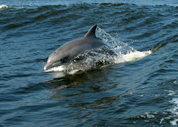

We have many activities for you to choose from, here at the resort and in the surrounding area.
Some of our visitors enjoy deep-sea fishing trips. We have a small fleet of boats that will take you out for either a half or a full day. One of our most popular trips leaves late in the afternoon and stays out long enough to take in a beautiful Florida sunset on the way home. This is a very relaxing excursion that most guests of all ages really enjoy. Of course, you can also surf cast, right from the beach. Just be mindful of the clearly marked areas for surf casting to make sure you are far enough away from the swim beach to prevent "catching" one of our guests!
And don’t forget our dolphin cruises. We have a unique approach — two boats speed along, side by side, about 50 yards apart. The dolphins love it because it generates a huge wake. You'll see them jumping right between the boats! You can arrange for tickets for fishing excursions or dolphin cruises at The Club House desk.
Check out these links for kid-friendly attractions in the area:
The famous Blue Angels, the nation’s oldest flying aerobatic team, are stationed at the Naval Air Station Pensacola, less than a one-hour drive from The Striped Umbrella. You can watch the team practice at the Museum of Naval Aviation viewing area, an unforgettable experience for all ages. Information on dates and times is posted on their website, or you can call The Club House desk.
It's a short ride over the Alabama border to see the USS Alabama, one of America's most decorated battleships. The "Mighty A" is docked at Battleship Memorial Park in Mobile Bay, Alabama. There you can take a two-hour self-guided tour that is rich in history. Hours, directions, and prices are posted on their website, or call The Club House desk.
How about going parasailing! We can make reservations for parties of up to twelve people at a time at any of our five locations, including one at our own marina.
The Striped Umbrella
25 Beachside Drive
Ft. Eugene, Florida 33775
555-594-9458
Club Manager